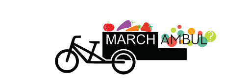

<!-- Navigation -->
<nav class="navbar navbar-default navbar-fixed-top" role="navigation">
    <div class="container">
        <!-- Brand and toggle get grouped for better mobile display -->
        <div class="navbar-header">
            <button type="button" class="navbar-toggle" data-toggle="collapse" data-target="#bs-example-navbar-collapse-1">
                <span class="sr-only">Toggle navigation</span>
                <span class="icon-bar"></span>
                <span class="icon-bar"></span>
                <span class="icon-bar"></span>
            </button>
            <a class="navbar-brand" href="#">Marchambul<span class="add-if-space"> - un projet ouvert à tous </span></a>
        </div>
        <!-- Collect the nav links, forms, and other content for toggling -->
        <div class="collapse navbar-collapse" id="bs-example-navbar-collapse-1">
            <ul class="nav navbar-nav navbar-right">
                <li>

                  <a class="contact-button" download="plaquette_marchambul.pdf" href="../plaquette marchambu-v4.pdf">Télécharger la plaquette de présentation</a>
                </li>
                <li>

                    <a class="contact-button" href="#contact">Contactez-nous</a>
                </li>
            </ul>
        </div>
        <!-- /.navbar-collapse -->
    </div>
    <!-- /.container -->
</nav>

<div class="pre-header"></div>


<!-- Header -->
    <div class="intro-header">
    <div class="container">

        <div class="row">
            <div class="col-lg-12">
                <div class="intro-message">
                  <h3><span data-toggle="tooltip" data-placement="top" title="source: http://alimentation.gouv.fr/circuit-court-local-consommation" class="stats highlight ">71%</span> des francais préfèrent acheter des produits locaux mais seulement <span data-toggle="tooltip" data-placement="top" title="source: http://miramap.org/-Les-AMAP-.html" class="stats highlight">0,3%</span> font partie d'une AMAP...</h3>
                    <h1>Comment démocratiser la consommation de produits locaux ?</h1>
                    

                    <hr class="intro-divider pre-slogan">
                    <!-- <h1>{{ page.title }}</h1> -->
                    <h3 class="slogan">le marché ambulant qui se faufile partout</h3>

                    <a href="#concept" class="button btn-default btn-lg link-href">Comment ça marche?</a>
                    <!-- <ul class="list-inline intro-social-buttons">
                        {% for social in site.social %}
                        <li>
                            <a href="{{ social.url }}" class="btn btn-default btn-lg"><i class="fa fa-{{ social.title }} fa-fw"></i> <span class="network-name">{{ social.title }}</span></a>
                        </li>
                        {% endfor %}
                    </ul> -->
                </div>
            </div>
        </div>

    </div>
    <!-- /.container -->

</div>
<!-- /.intro-header -->
